First, we need to look all participating driver's nationalities. This graph shows all drivers who have raced in a Formula One race from 1950-2019, in total there have been 845 different drivers. The top three nationalities of drivers is British in first with 164 drivers, American in second with 157 drivers, and Italian in third with 99 drivers.
Assignment 2: Exploratory Data Analysis
Julia Caldiera — jcaldier@terpmail.umd.edu
Dataset: Formula One Series Data
This dataset provides historical data about the Formula One car racing series from 1950 to 2019.
The data includes race results, circuit information, driver results and information, constructor standings, and season information.
To access this database with Tableau, the website offers database images which are updated after each race with updated results. The postgreSQL database image was downloaded and run locally, then connected to Tableau. It includes all data from 1950 to the end of the 2019 season.
Due to COVID-19, the 2020 Formula One season has been postponed, so no data from 2020 is available as there has been no races yet.
The data is available online at: ergast.com
Initial Analysis Questions
- Which country has produced the most successful teams and drivers?
- What combination of team and driver nationalities have produced the best results?
- Has the number of car crashes and accidents during the race gone down over time?
- How has the average age of drivers in Formula One changed over time?
Discoveries & Insights
Which country has produced the most successful teams and drivers?
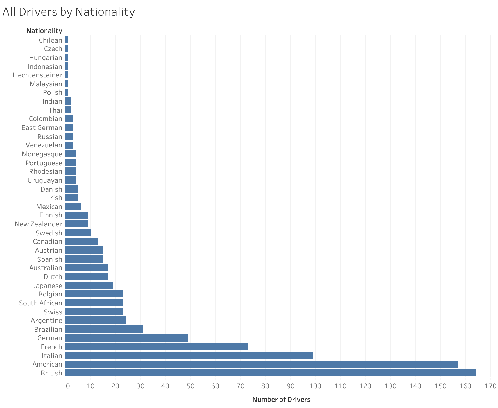
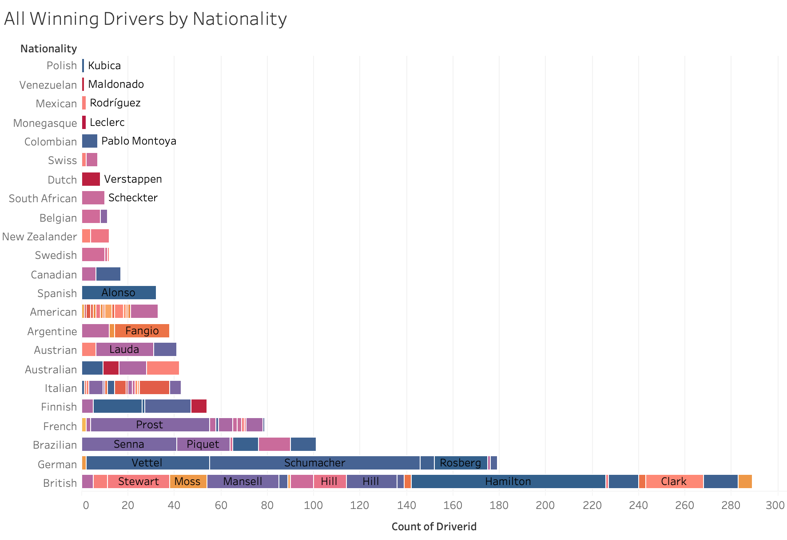
This chart shows all drivers who have won a race in Formula One since 1950, grouped by their nationality who have won a race. With a total of 1021 races, there have been 108 different drivers who have won a race, with the average race wins being 9.45 race wins. Judging by this graph, the most sucessful nationalities in Formula One for all winning drivers are Brazilians with 101 race wins, Germans with 179 race wins, and British drivers with 289 race wins. To further refine this information we'll now look at a graph of all the drivers who have won more than the average race wins for race winning drivers.
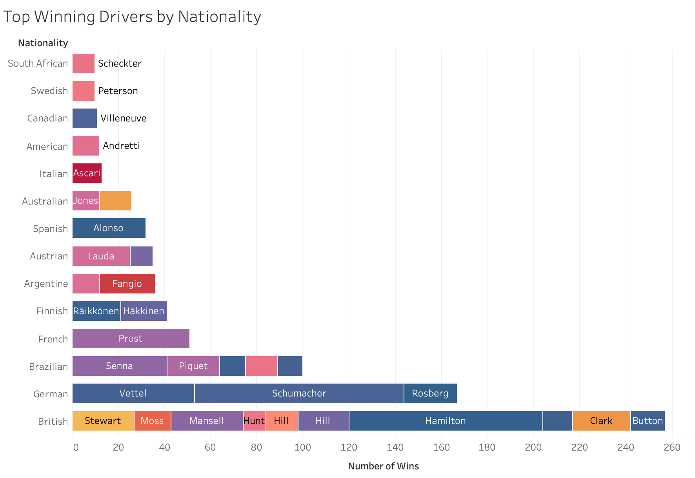
This graph shows drivers who have won 10 or more races in Formula One since 1950, this refining of the data excludes 70% of race winning drivers from the data. In total there are 33 drivers with the average number of race wins being 24.27. Similar to the previous graph, Brazilian, German and British drivers are the top three nationalities. Interestingly, the top three nationalities have a similar distribution to the previous graph with each higher tier in the top three almost doubling the previous tier.
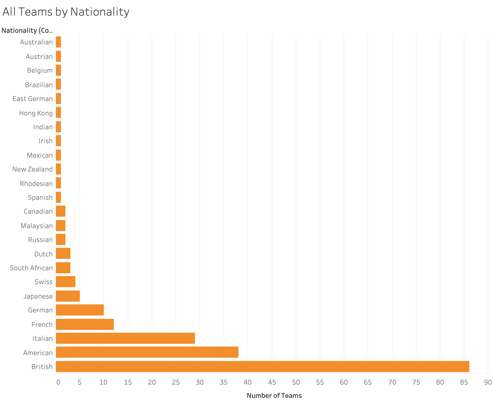
This graph shows all team who have raced in a Formula One race from 1950-2019, in total there have been 208 different teams. The top three nationalities of teams is British in first with 86 teams, American in second with 38 teams, and Italian in third with 29 teams.
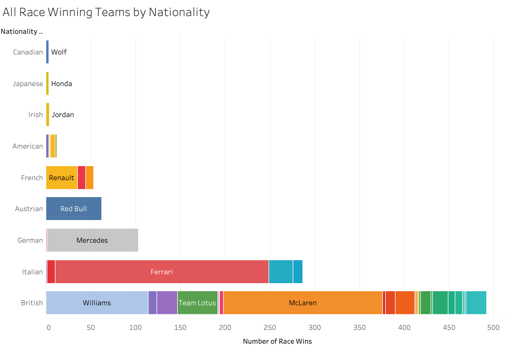
This chart shows all Formula One teams since 1950 who have won a race. In total there are 44 different teams with the average number of race wins being 23.20. While teams of German and British nationalities are in the top three, unlike the driver nationalities graphs, Brazilian nationalities do not appear in the top three or the graph at all. German teams are third with 104 race wins, Italian teams are second with 287 race wins, and like the drivers graph, British teams are first with 492 race wins. To get a refined view of this information we'll limit it to teams who have won more than the average number of race wins.
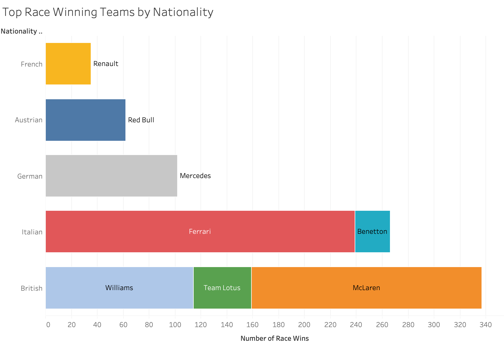
This chart shows the Formula One teams grouped by nationality which have won more than 24 races. In total there are only 8 teams which fit this criteria and amongst the most sucessful teams the average number of race wins are 100.25 races, this refining of the data excludes 82% of race winning teams from the data. The top three nationalities remain as they were before, with German teams in third, Italian teams in second, and British teams in first. The top German teams are now limited to just one team, Mercedes, with 102 race wins. Italian team race wins are still comprised of more than one team, with the total race wins being close to the original value of 287 with 266 race wins. The number of British race winning teams has changed the most from 23 teams down to 3, with a total of 337 race wins.
What combination of team and driver nationalities have produced the best results?
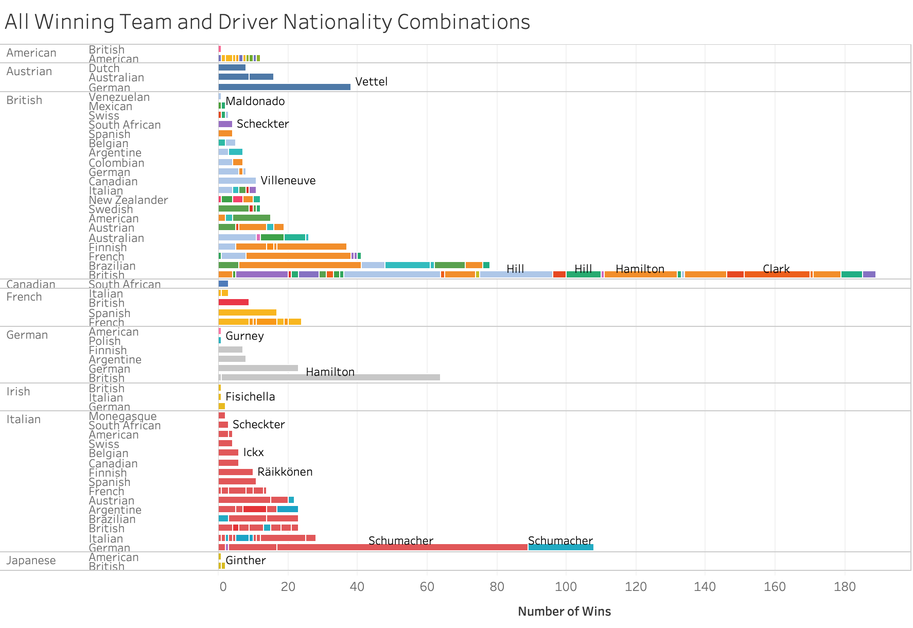
To determine which combination of driver and team nationalities have been the most sucessful, we will combine the two previous data sets to show all drivers
and teams with their respective nationalities who have won a race. In total there are 183 different team and driver combinations, with the average number of race
wins being 5.58 wins.
Because drivers often switch teams multiple times throughout their careers, there are drivers
like Lewis Hamilton and Michael Schumacher who appear multiple times in this graph for different teams. This effects the readability of this graph so we'll refine
it to only include team and driver combinations who have won more than the average number of race wins.
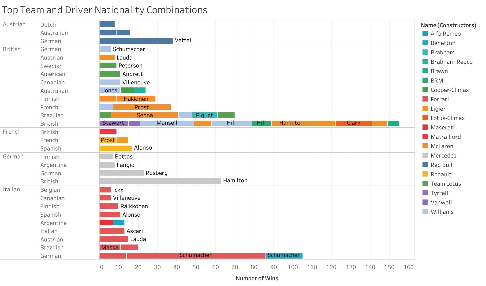
This graph shows the refined data of team and driver combinations who have won 6 or more races. In total there are 5 different team nationalities and 16 different driver nationalities. The average number of race wins for this group is 14.40, and the top three driver and team nationality combinations are Brazilian drivers on British teams with 70 race wins, German drivers on Italian teams with 105 race wins, and British drivers on British teams with 155 race wins.
Has the number of car crashes and accidents during the race gone down over time?
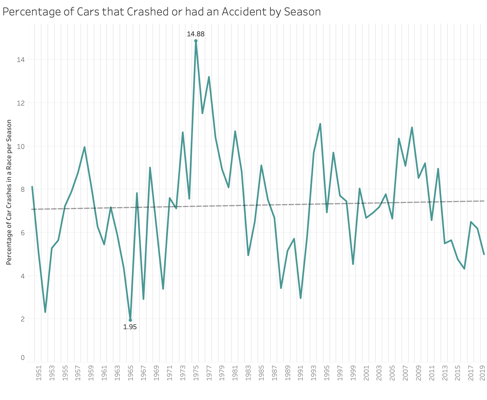
The F1 database results table shows the status of each car in a given race, a crash is classified as two cars colliding with each other, while an accident is
classified as a car that crashes but does not involve any other cars. To see if the number of crashes and accidents in Formula One races has gone down over time, we
also have to account for the relationship between the number of cars that participate in each race and the cars that do not finish the race because of crashes or
accidents.
To find the percentage of car crashes relating to the number of participating cars in each season, we sum up the number of crashes and accidents statuses
across all races and divide it by the number of participating cars in each season. Once this has been completed the following graph is the result, as we can see from
the graph there is wide variance across all seasons with the number of crashes and accidents, with the 1965 season being the minimum with having only 1.65% of participating
cars crash, and the 1975 season being the maximum with 14.88% of participating cars crashing. To see if the number has gone down over time requires us to add a linear trend
line to the graph, as there is not an obvious decrease to the graph. Upon adding the trend line we can see that the average number of crashes and accidents has actually slightly
increased over time.
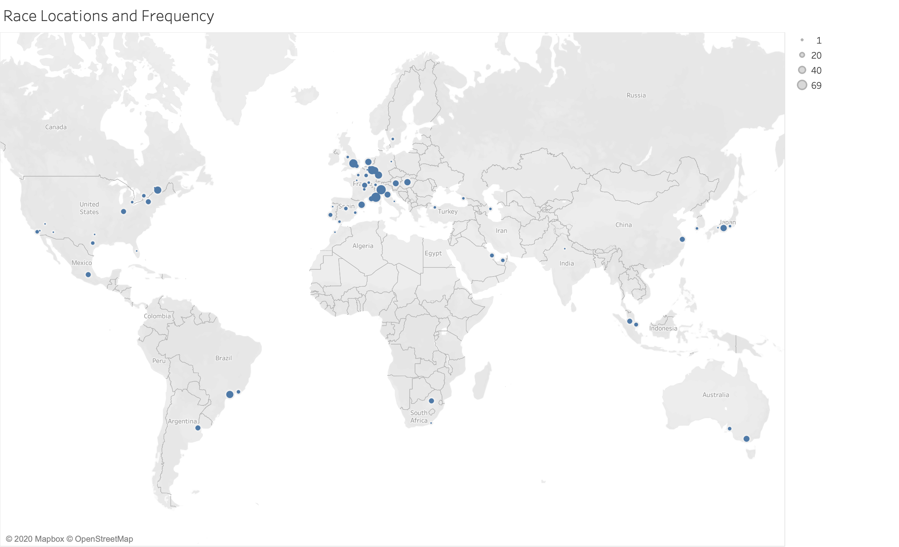
To further investigate the findings from the previous graph, we'll have to look at a couple specific races to see if the same trend is visible. In Formula One, each season can have different race locations, so the Grand Prix of America may not happen every year, or may be held at different race tracks over time. So we need to find tracks that have held races across a large number of race seasons. This map shows the track locations of all the different Grand Prix there have been since 1950. The size of the markers is determined by how many times a race has been held at a particular track. We want to investigate two different track's crash records that have appeared on the Formula One seasonal calendar consistently since 1950, the two tracks with the highest frequency of appearance are Autodromo Nazionale di Monza in Italy with 69 races, and Circuit de Monaco in Monaco with 66 races. No track has appeared in every single Formula One season so these two will have to suffice.
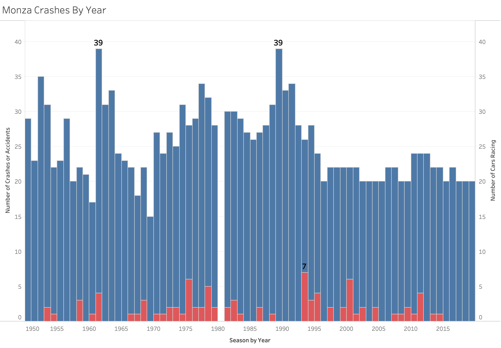
This graph shows how many cars started a race and how many cars crashed or had accidents across all Formula One seasons from 1950-2019. 1980 has no data as the Italian Grand Prix was not held at Monza that year due to the track undergoing facility improvements. The blue bars represent the number of cars that started a race, and the red bars represent how many of those cars crashed or had accidents. Years with no red bars are years that there were no accidents or crashes in the race. As we can see from the graph, while the number of cars that participated in the Monza race has gone down and stabilized to roughly 20, the number of accidents does not follow the same trend and instead seems to oscilate between several years of no crashes followed by several years of 1 to 5 crashes. This graph supports the original crash and accident data graph but offers more context, implying that the number of crashes has not seen an overall decrease with time, but the number of cars that participate in races has gone down and stabilized over time.
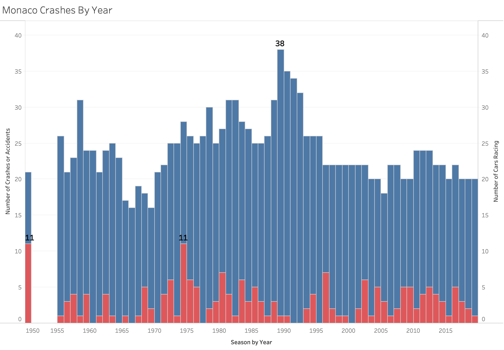
This graph has the same parameters and variables as the previous graph applied to the Circuit de Monaco track for all Formula One seasons from 1950-2019. The years 1951 through 1954 do not have data as the race was not held during those years. The results from this graph show the same decrease in participating cars but a consistent number of crashes and accidents during the Monaco Grand Prix with an average of 2-3 crashes or accidents.
How has the average age of drivers in Formula One changed over time?
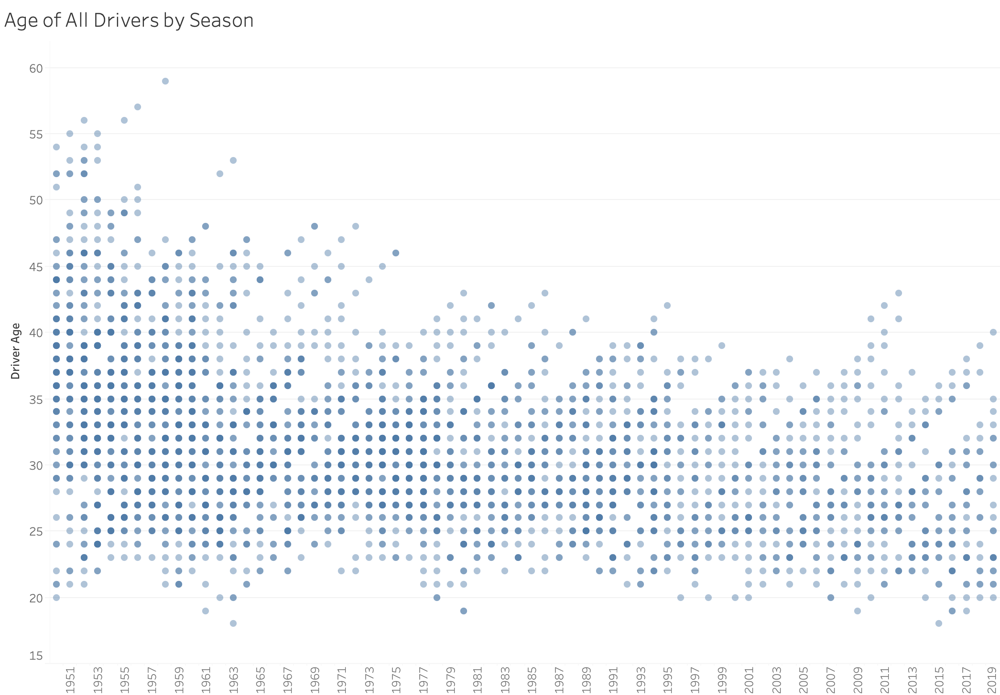
This graph shows the age of every participating driver in Formula One by season. Each driver is represented by a circle, and the darker the circle the more drivers there are that are the same age. It appears in the earlier seasons of Formula One, there was greater variation in the age of the drivers, with several drivers being over the age of 45 until the mid 1970s. Across all seasons it would seem that the majority of drivers were between 25 and 35 years old. To get a better look at what the average age is we will make another graph that only shows the average age over time, and show the actual trend line and predictions for future seasons.
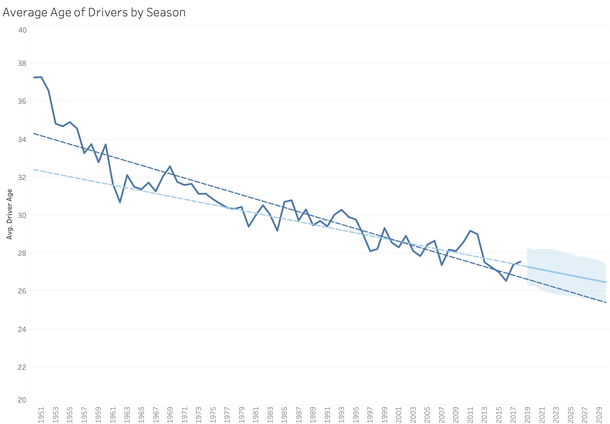
This graph shows the average age of Formula One drivers by season from 1950 to 2019. there is a visible decline in the average age over time, with early seasons of Formula One having average ages being over 30 years old, and seasons from the past decade having an average age of under 30 years old. Our trend line in dark blue shows the same decrease in age over time as the data does, and the light blue forcast line estimates that by the year 2025 the average age will be approximately 26 years old, down from an average age of 27 in 2019. The current Formula One rules require drivers that race to have an FIA Super License, part of the requirements for the license require drivers to be over the age of 18. If this rule stays as is in the future it is unlikely we'll see the average age of drivers drop to or below twenty to eighteen years of age.
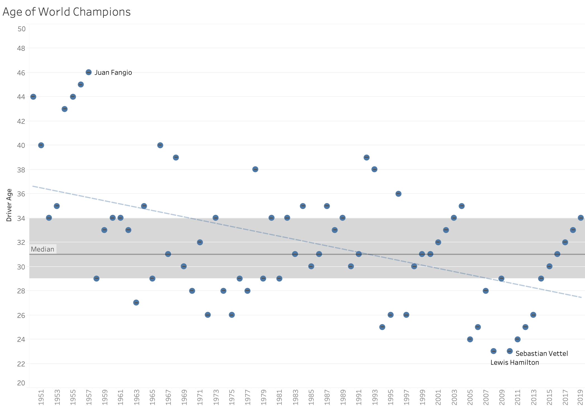
Upon investigating my last analysis question, I began to wonder if the age of World Champions (the driver who scores the most points across a Formula One season) has followed the same decrease in age as the average age of all participating drivers. This graph shows the age of all Formula One World Champions at the time of their seasonal victory across all seasons from 1950 to 2019. Since there are less data points as only one driver can win the championship per season, it is less obvious if the age of the drivers has gone down over time, but with the addition of a trend line, we can see that it follows the same downward trend as the average age of all drivers. Different from the previous graph though, it is visible that the age of the winners is mostly between 29 to 34 years old with the addition of the median with quartiles visualization. An interesting feature of this graph is the repeated oscillation of the age of the winners in several year periods. This can be attributed to the same driver winning several years in a row so their age increments by a year each successive win. This is visible from the years 2000 to 2004 with Michael Schumacher winning every year, 2010 to 2013 with Sebastian Vettel, and 2014 to 2019 with Lewis Hamilton.
Summary
From the data it would seem that the most successful teams and drivers have been from the United Kingdom, however, we need to take into account that the number of drivers and teams from the UK is significantly higher than
other nationalities. To fully answer this question would require further analysis where we account for the variance in participation for different countries. From the data as it is, we can say that strictly by the numbers the most
sucessful country in terms of Formula One results has been the UK. Another interesting feature of the data is the high number of American drivers and teams, but the low amount of wins they produced. This is something that the data does not
provide a straight answer for, and requires a bit of investigation to explain. The reason there are so many American teams and drivers is because for the first decade of the Formula One Championship, it included the Indianapolis 500 race, which
would be comprised of primarly American drivers and teams with a high number of participants (anywhere from 30 to 50 cars). This partially explains the disparity between American teams and drivers participating versus victorious.
The data shows that while the number of car crashes and accidents has remained relatively steady over time, the number of cars that participate in Formula One has gone down. This means that there has been an increase in the number
of crashes and accidents in Formula One which was unexpected. To explain the oscillation in the number of crashes when looking at Monza and Monaco would require further analysis, but I speculate that it would at follow the same path as
regulation changes and driver deaths. When there have been driver deaths in Formula One, the following year tends to enforce stricter rules on the drivers to attempt to improve safety in the sport.
The data shows that the average age of Formula One drivers has gone down over time as well as the age of World Driver Championship winners. An external factor that influences this but is not shown in the data is the emergence of multi-generational
Formula One families. When the son of a driver becomes prominent in racing, Formula One teams will hire the driver for their skill and name recognition, this leads to drivers being signed younger in life which brings the average age down. Also with
the increasing physical demands of driving the cars, teams are less likely to hire older drivers who may not have the endurance or reaction times as their younger peers.